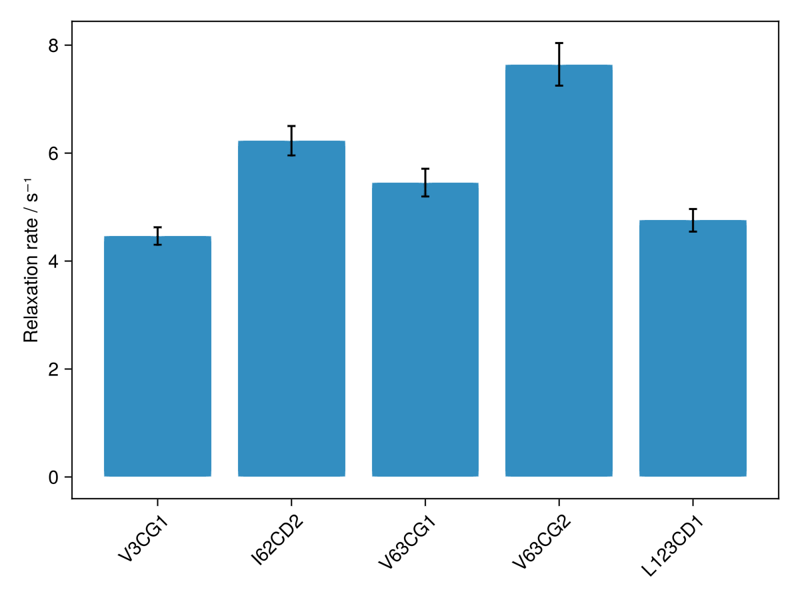

Summary Plots
summaryplot plots a fitted parameter against residue number, from one or more saved results.csv files. It is an ordinary Makie figure using whichever backend is active, so it is interactive under GLMakie and can be saved with save("summary.pdf", fig) under CairoMakie.

Basic usage
fig = summaryplot("run1/results.csv") # from a saved file
fig = summaryplot("run1/") # folder containing results.csvSaving plots
Summary figures can be saved as publication-quality pdfs using CairoMakie:
using CairoMakie
fig = summaryplot("my-analysis-output/")
save("summaryplot.pdf", fig)Y-axis labels
Each parameter has a built-in default label (for example :hetnoe → "Heteronuclear NOE", :eta → "η / s⁻¹"). For the generic relaxation rate :R — used by relaxation2d, which makes no assumption about whether you measured R₁ or R₂ — you should supply the appropriate label explicitly:
fig = summaryplot("results/"; param=:R, ylabel="R₂ / s⁻¹")
fig = summaryplot("results/"; param=:R, ylabel="R₁ / s⁻¹")Stacked panels
Passing multiple sources (as a vector or as separate arguments) produces vertically stacked panels, one per source. By default each panel uses its own default parameter, so a mix of experiment types — relaxation and hetNOE, for example — each show their own result automatically:
# Two sources as separate arguments
fig = summaryplot("r2/", "r1/", "noe/")
# Or equivalently as a vector
fig = summaryplot(["r2/", "r1/", "noe/"])
# Per-panel y-axis labels
fig = summaryplot("r2/", "r1/", "noe/";
param=[:R, :R, :hetnoe],
ylabel=["R₂ / s⁻¹", "R₁ / s⁻¹", "Heteronuclear NOE"])
# Same parameter across all panels (e.g. comparing WT vs mutant R₂)
fig = summaryplot("wt/", "mutant/"; param=:R, ylabel="R₂ / s⁻¹")Plot style
- Backbone/amide peaks (labels such as
A10N,G23HN) → scatter of value vs residue number with error bars. - Atom-typed peaks (e.g. methyls
I13CD1,L26CD2) → bar chart ordered by(residue, atom)with peak-label ticks, so stereospecific pairs do not overlap. The style is chosen automatically per panel. - Unassigned peaks (default
X#names) are omitted unless every peak is unassigned, orinclude_unassigned=trueis passed.
Figure size
Pass size=(width, height) (in pixels) to control the figure dimensions:
fig = summaryplot("output/"; size=(800, 400))
fig = summaryplot("r2/", "r1/", "noe/"; size=(800, 900))Parameter selection (advanced)
By default each source plots its own primary parameter (the first derived column in results.csv, or the experiment's primaryparam). To plot a different column, pass its name as a Symbol — the column header in results.csv with a colon prefix:
# Parameter :R20 corresponds to the column headed "R20" in results.csv
fig = summaryplot("cpmg/"; param=:R20)
# Amplitude from the first plane
fig = summaryplot("fit2d/"; param=Symbol("amp[1]"))Symbols in Julia are formed with a leading colon: :R, :hetnoe, :eta, :PRE. For column names that contain brackets or other special characters (such as amp[1]), use Symbol("amp[1]"). To see which parameters are available from a file or live experiment, call available_params:
available_params("results/results.csv") # → [:R, :A, :amp_1, ...]
available_params(expt) # → [:R2, :hetnoe, ...]For stacked panels, param and ylabel may each be a vector with one entry per source; use nothing in a vector position to fall back to that source's default:
fig = summaryplot(["relax/", "noe/"]; param=[:R, nothing], ylabel=["R₂ / s⁻¹", nothing])